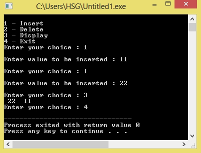

/*C Program to implement priority Queue*/
#include<stdio.h>
#include<conio.h>
#define MAX 10
void insert_by_priority(int);
void delete_by_priority(int);
void create();
void check(int);
void display();
int priority_queue[MAX];
int front, rear;
void main()
{
int n, ch;
printf("\n1 - Insert ");
printf("\n2 - Delete ");
printf("\n3 - Display ");
printf("\n4 - Exit");
create();
while (1)
{
printf("\nEnter your choice : ");
scanf("%d", &ch);
switch (ch)
{
case 1:
printf("\nEnter value to be inserted : ");
scanf("%d",&n);
insert_by_priority(n);
break;
case 2:
printf("\nEnter value to delete : ");
scanf("%d",&n);
delete_by_priority(n);
break;
case 3:
display();
break;
case 4:
exit(0);
default:
printf("\nChoice is incorrect, Enter a correct choice");
}
}
}
void create()
{
front = rear = -1;
}
void insert_by_priority(int data)
{
if (rear >= MAX - 1)
{
printf("\nQueue overflow no more elements can be inserted");
return;
}
if ((front == -1) && (rear == -1))
{
front++;
rear++;
priority_queue[rear] = data;
return;
}
else
check(data);
rear++;
}
void check(int data)
{
int i,j;
for (i = 0; i <= rear; i++)
{
if (data >= priority_queue[i])
{
for (j = rear + 1; j > i; j--)
{
priority_queue[j] = priority_queue[j - 1];
}
priority_queue[i] = data;
return;
}
}
priority_queue[i] = data;
}
void delete_by_priority(int data)
{
int i;
if ((front==-1) && (rear==-1))
{
printf("\nQueue is empty");
return;
}
for (i = 0; i <= rear; i++)
{
if (data == priority_queue[i])
{
for (; i < rear; i++)
{
priority_queue[i] = priority_queue[i + 1];
}
priority_queue[i] = -99;
rear--;
if (rear == -1)
front = -1;
return;
}
}
printf("\n%d not found in queue to delete", data);
}
void display()
{
if ((front == -1) && (rear == -1))
{
printf("\nQueue is empty");
return;
}
for (; front <= rear; front++)
{
printf(" %d ", priority_queue[front]);
}
front = 0;
}
Output:
